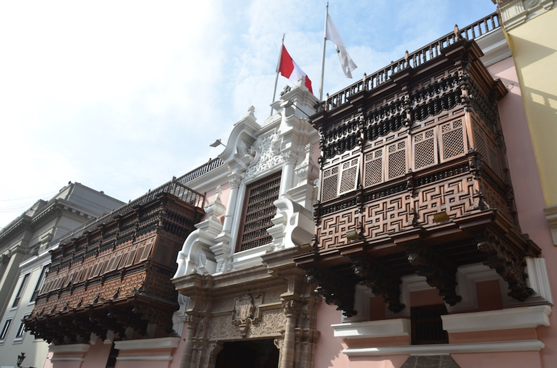
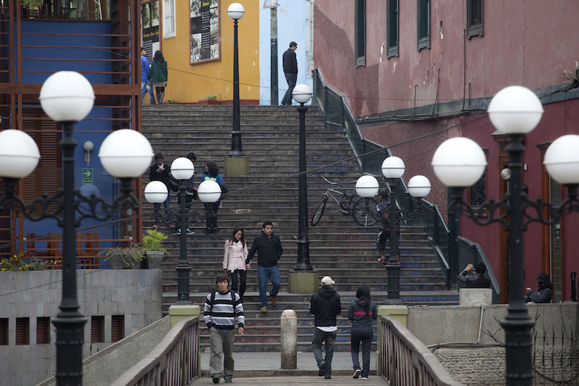
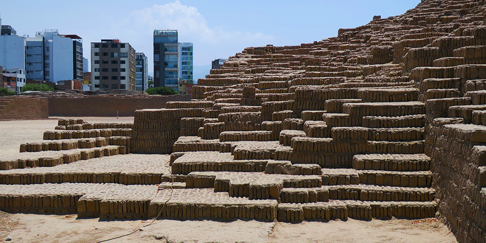

SHOPPING IN LIMA
As a part of its process of growing and becoming a large, commerce-booming and tourist-friendly capital, Lima has many new shops, boutiques, commercial areas and shopping malls, suitable for almost any budget; from the very affordable street fairs to the most exclusive malls. Many international brands and boutiques have presence now in Lima’s shopping scene, but we are sure that you will prefer those places that focus in original, local creations, so you can get mostly stuff original from Peru.
Most tourists are looking for some small, easy to carry and affordable gifts for friends and/or family. If this is your case, you may want to explore the wide and almost ubiquitous world of street fairs, flea markets and “indian markets”, where you can find stuff like souvenirs, handicrafts, décor objects for your desktop or home, etc., as well as alpaca clothing. However there are certain spots specially recommendable due to their location, quality and prices; Mercado Indio (in Pueblo Libre), Indio’s Market (Miraflores). In these places you will find most of the traditional handicrafts from all over Peru, at very reasonable prices, and other option in this department is the Miraflores Central Park (or “Parque Kennedy”) where you can also enjoy of typical Peruvian desserts.
PARQUE CENTRAL DE MIRAFLORES
A park may seem an odd place for shopping, but here you will find some very nice flea markets starting 4pm, and during weekends: the offer is mostly handicrafts and unexpensive jewellery, as well as very affordable clothing (alpaca and cotton garments) and accessories (gloves, beanies, scarves, etc.). But some stalls may surprise you with antiquities and very old books, well preserved. This is another place where you can bargain and getting some discount. You can enjoy a walk along the park (plus taking a glance at the lively surroundings) and end up doing some shopping at these open stalls.
SUPERMERCADOS WONG
Odds are that you will get to see Supermercados Wong's red logo in many parts of the city. We recommend this chain not only because its customer service is excellent, but also due to the great variety of local and imported goods you will find. Fruits, groceries, beverages, personal care articles, baby care goods, some delicatessen, convenient meals for take away (they sell them by weight) and even a cafeteria and bakery section. And there's the Teleticket modules, where you can book tickets for most live shows in Lima. Wong's main store is located in San Isidro but will find a supermarket in many other districts. You may also want to try its less sophisticated chain, called Metro.
ALPACA 111

A brand with many years of presence in Peru, and with an excellent reputation for the quality of the very fine alpaca and vicu�a clothes it sells. Vicu�a is considered to be the finest wool fiber worldwide, and they also have two extra quality alpaca fibers: Royal Alpaca and Baby Alpaca. Nowadays the company has grown and have several stores in Lima, including one at the airport (Aeropuerto Internacional Jorge Ch�vez), and in Cusco and Arequipa as well. You will find very good sweaters but also accessories like hats, scarves, and coats. However, be ready to spend some money, since prices tend to be high.
JOYERIA ILARIA
DEDALO ARTE Y ARTESANIA
Established in 1992, Ilaria specializes in silver jewellery, with original, chic designs by Peruvian artisans who rescue those traditional hand-made techniques and combine them with contemporary influences and with many different natural materials and gems: spondylus, opal, pearls, Peruvian turquoise, quartz, etc. They claim that each one of their pieces is truly hand-made with 100% Peruvian 925 silver, and that these jewels are sold with lifetime guarantee. They have a store in San Isidro, plus other ones in Larcomar and Jockey Plaza shopping centers. These jewels are definitely a bit pricey for local standards, but the quality is worth it. Recommendable.
MERCADO INDIO LA MARINA
Looking for a place to get all your souvenirs and gifts and not spending all of your budget? Forget about top-class spots and go to Mercado Indio galleries: located on Avenida La Marina, this is a large complex that comprises several long galleries full of small shops and stalls offering handicrafts from all over Peru. Here you can choose among a large variety of items, from alpaca sweaters to some inexpensive decoration items. Prices are very affordable, and the extremely large of offer may take you some more time to choose the most suitable for you. And the best of all: don't forget that in these places you can bargain --and maybe getting a significant discount.
FASHION IN LIMA
A masters is the first level of graduate coursework and can be obtained after you receive a bachelor’s degree. Earning a masters usually requires two years of full-time study, which amounts to 36 to 54 semester credits. Fashion programs can help individuals to develop their unique and distinct aesthetics and visions and help them to turn them into creative and innovative fashion designs. Trends may be covered as well as various topics in the fashion industry. Lima is the capital city of Peru and it is popular for being a good corporate destination. Lima has a booming hotel business due to this reason. Keeping this in mind universities in Lima like Universidad de Lima and Universidad Nacional Mayor de San Marcos, are dedicated to preparing students to compete well in the corporate world. Request Information Master's Degrees in Fashion in Lima in Peru 2021
The heart of the historic Incan empire, Peru offers a rich past, diverse cultural heritage and extraordinary biodiversity. Peru, located on the central Pacific coast of South America bordered by Ecuador, Colombia, Brazil and Bolivia, is the world's 20th-largest nation. With a population of approximately 23 million, Peru is South America's third-largest country after Brazil and Argentina. Peru's complex landscape is divided into three distinct geographic regions: the high sierras of the Andes, one of the world's least stable mountain ranges; the lowland coastal region, recognized as the planet's most arid region; and the inaccessible jungle forest region below the Andes' eastern slopes, incorporating the Amazon River Basin. Because of these differences, Peru's terrain is wildly diverse, offering everything from grasslands to highlands to coastal plains and the Atacama desert. These distinct ecosystems display unique habitats and wildly variable climates.
TOURIST ATTRACTIONS LIMA
Home to ancient cultures long before the Spanish reached its shores, Lima blends the past with the present, making it an inviting city to visit. Peru’s capital and largest city is the place to learn more about pre-Columbian life at a time when humans were sacrificed to appease the gods. The city is filled with museums, some on colonial buildings, others in modern buildings. Visitors who desire a break from antiquities can enjoy a stroll along the beach or chow down on typical Peruvian food at a neighborhood case. And when night falls, visitors can partake of the disco scene or enjoy a magic show featuring dancing water fountains.
Torre Tagle Palace
The Torre Tagle Palace is a stately looking building that blends several architectural styles in downtown Lima. The building blends Moorish, Andalusian, Asian and Criollo features, with even some materials coming from Spain. Two dark wood balconies grace the front of this Spanish Baroque building, while the interior features high ceilings and Sevillian tiles. The palace was built in the early 1700s s a home for the nobleman who served as treasurer for the Royal Spanish fleet. Today, it houses the offices of the Peruvian Ministry of Foreign Affairs, meaning it is generally not open for public visits.
Lima Cathedral
Barranco District
Groundbreaking for the construction of the original Lima Cathedral took place in 1535, and was expanded over the years. After it was destroyed several times by earthquakes, it was demolished and a totally new cathedral built several centuries later. The current cathedral is based on the 1746 cathedral. With additions over the years, the cathedral represents architectural styles from baroque to neoclassic. Located in historic Lima, the ornate cathedral has 13 chapels; the cathedral’s main altar is gold-plated. Saints, virgins and apostles are carved into the choir stalls. The Spanish explorer Francisco Pizarro, who conquered Peru, is buried here. The cathedral is even more impressive when it is lit up at night.
Centuries ago, Barranco was a sleepy fishing village. Now it is a coastal district that once was the playground for wealthy Limans. In the 20th century, however, writers and artists began moving in, giving the district a bohemian flavor. This picturesque district is dotted with brightly painted Art Deco houses accented with blossoming trees. During the day, Barranco offers a slower pace of life than Lima, but action picks up when the sun goes down. People flock to the Parque Municipal, dine in small restaurants serving typical Peruvian fare, or dance the night away in discos and nightclubs.
Casa Aliaga
Safely hidden in a side street is Casa Aliaga, one of the lesser-known attractions in Lima. As old as Lima itself, the house stands on land given in 1535 to Jerónimo de Aliaga, one of Pizarro’s followers, and which has been occupied by 18 generations of his descendants. Casa Aliaga may not look like much from the outside, but the interiors are lovely, with vintage furnishings and tile work. Jerónimo’s descendants currently live in a modern extension, while much of the original main house is on display.
Huaca Pucllana
If ancient monuments appeal to travelers, then Huaca Pucllana is the place to go; it’s considered one of Lima’s most important monuments. Located in Miraflores, this adobe pyramid was built around 500, but was later covered up and not rediscovered until the mid-20th century. Based on their excavations, archaeologists believe Huaca Pucllana was the ceremonial and administrative center for the early Lima culture. Many artifacts, including textiles, ceramics and animal remains, have been found here to support this theory. At one time, human sacrifices took place here. The complex includes the pyramid and a small museum filled with artifacts.